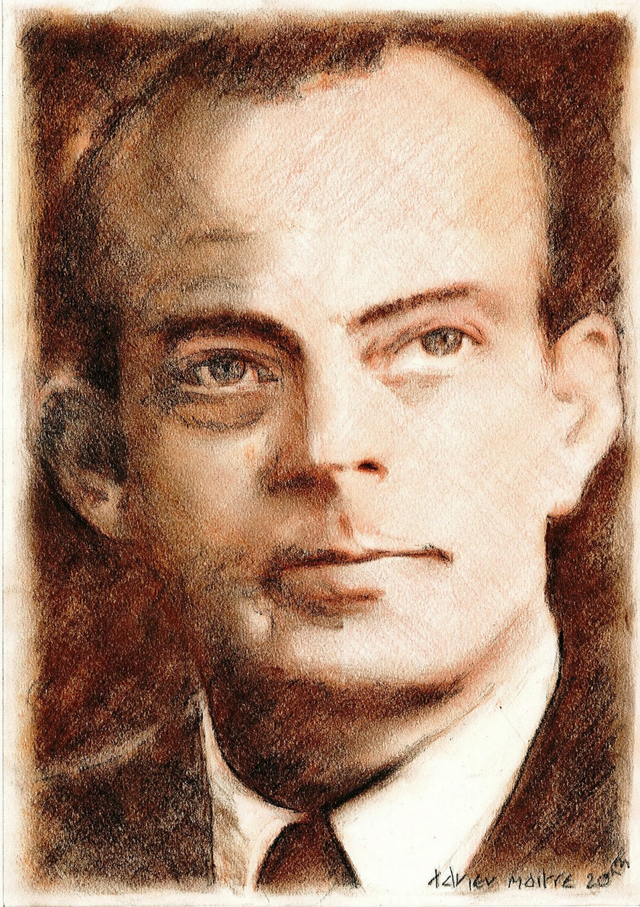
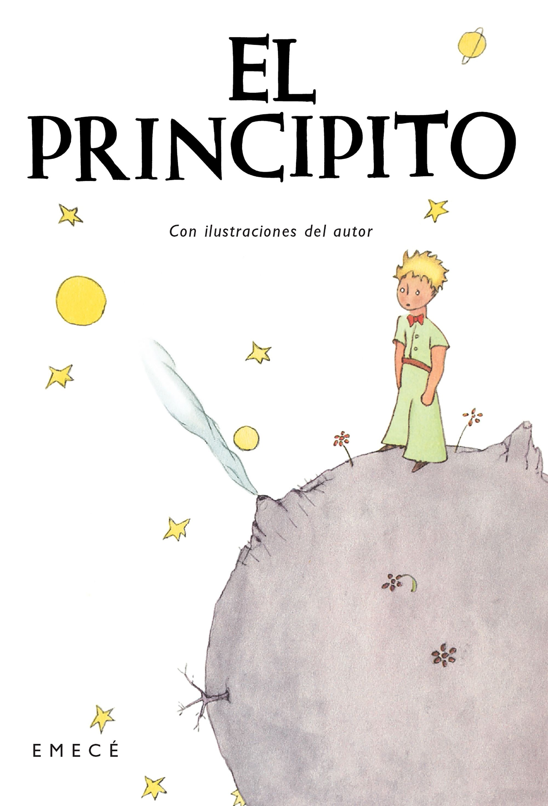
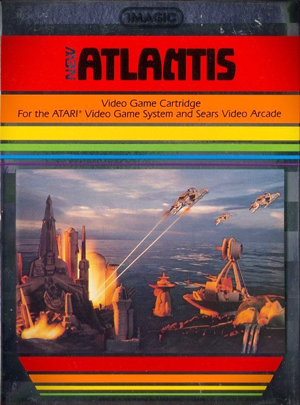
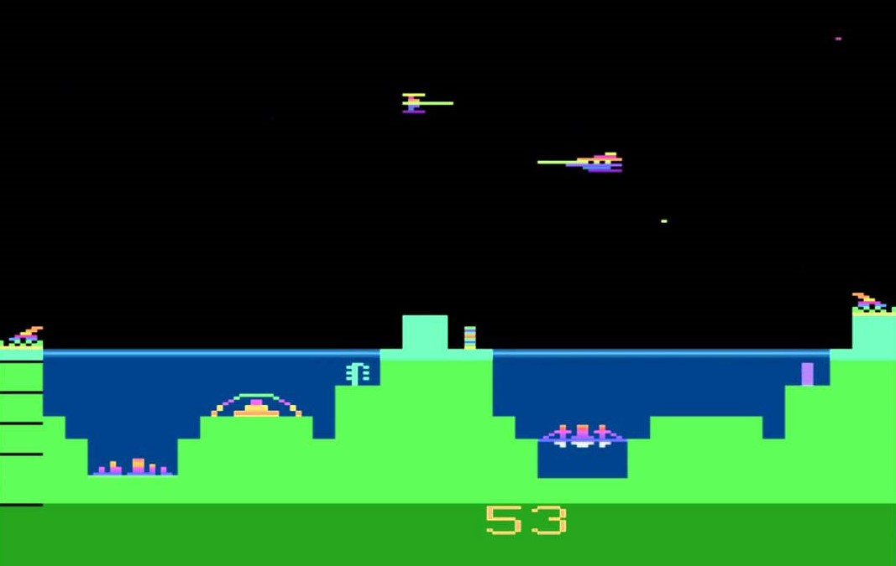

El sitio fue creado por Sebastián Ocampo, estudiante de la Lic. en Diseño Multimedial de la FBA.
Este trabajo se logró basándose en el libro "El Principito" (1943), del escritor Antoine de Saint-Exupéry, quien nació en Lyon, Francia, en 1900. Fue aviador y escritor. Parte de su experiencia como piloto le sirvió de inspiración
para escribir "El principito".
La mayor parte de su producción literaria fue escrita durante su exilio en Estados Unidos. Murió volando
en una de las misiones desde Cerdeña y Córcega en el 1944.


 
Además, también se hizo una reversión del juego "Atlantis" (1982), de Imagic para las Atari 2600.
El juego se situa en una Atlantis bajo el ataque de los Gorgon, una armada con armas capaces de destruir una parte de la ciudad. Al mando de las defensas de la ciudad, el jugador debe repeler las diversas oleadas enemigas.
A medida que resistan, las naves invasoras volarán más rápido y más bajo hasta poder destruir todos los edificios de la ciudad.